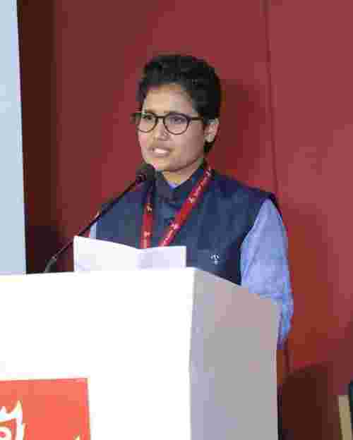

विदेह प्रथम मैथिली पाक्षिक ई पत्रिका

प्रियंका मिश्र
डा. रमानन्द झा 'रमण': साहित्य-साधनाक विविध आयाम
मैथिली साहित्यक आधुनिक यात्रामे किछु एहन साधक छथि, जिनकर महत्त्व मात्र हुनक लिखल पोथीक संख्यासँ नहि, अपितु भाषा-साहित्यक समूचा बौद्धिक परिवेशकेँ समृद्ध करबाक हुनक निरन्तर प्रयाससँ निर्धारित होइत अछि। डा. रमानन्द झा ‘रमण’ एही श्रेणीक विशिष्ट साहित्यकार छथि। ओ मूलतः आलोचक आ समीक्षक रूपेँ प्रतिष्ठित छथि, मुदा हिनक साहित्य-साधना मात्र आलोचनाधरि सीमित नहि अछि। निबन्ध, अनुवाद, सम्पादन, दुर्लभ ग्रन्थक पुनर्प्रकाशन, पत्र-पत्रिकाक सम्पादन, साहित्यिक-सांस्कृतिक संस्थासँ सक्रिय सम्बद्धता आ नव पीढ़ीक लेल स्रोत-सामग्रीक संरक्षणई सभ हिनक बहुआयामी साहित्यिक व्यक्तित्वक परस्पर सम्बद्ध पक्ष छनि । मैथिलीक विस्मृत आ अनुपलब्ध साहित्यिक धरोहरिक उद्धार एवं संरक्षणक चिन्ता आ शोधपरक सम्पादन – दृष्टि केँ स्पष्ट करैतएहि सन्दर्भमे‘मैथिली कथाक धाप’क भूमिकामे ओ लिखैत छथि—“मैथिलीक हेराएल-भोतिआएल, अनुपलब्ध कथाक एक वृहत्संग्रह ‘मैथिली कथाक धाप’ सुधी पाठकक समक्ष प्रस्तुत करैत हम अपनाकेँ ओहि दोषसँ मुक्त अनुभव करैत छी जे मैथिलीक विभिन्न पत्र-पत्रिकाक दोग-दाग आ झोंझमे पड़ल, कुहरैत मैथिली कथा-साहित्यक अमूल्य धरोहरिकेँ देखिओकेँ ओकर उद्धार आ संरक्षणक प्रयास नहि कएल, उदासीन रहि गेलहुँ।”
हिनक साहित्यिक कर्मक मूल प्रेरणा मैथिलीक सांस्कृतिक स्मृति, पाठकीय विवेक आ संस्थागत जीवनक बीच सृजनात्मक समन्वय स्थापित करब रहल अछि।आ तेँ,हिनक काजमे सर्जनशील संवेदना आ अनुसन्धानशील अनुशासनक विशिष्ट समन्वय देखबामे अबैत अछि। विभिन्न साहित्यकार, हुनक कृति तथा ताहिसँ सम्बद्ध प्रसंगक विपुल तथ्यक भंडार अपन स्मृतिमे सँजोगि केँ रखनिहार डा.रमानन्द झा ‘रमण’ आलोचना, सम्पादन आ अनुवादक क्षेत्रमे उल्लेखनीय अवदान द’ रहल छथि, हिनक सक्रियताक क्रम अनवरत चलि रहल अछि। जेना –‘सरोज रचनावली’ आ ‘उग्रानन्द समग्र’ सन महत्त्वपूर्ण ग्रन्थ एखनहुँ प्रकाशनाधीन छनि। मैथिली भाषा-साहित्यक अतीत आ वर्तमानसँ सम्बद्ध तथ्य, प्रसंग आ दुर्लभ सूचनाक हुनक व्यापक ज्ञानकेँ दृष्टिगत रखैत जँहिनका मैथिली साहित्यक ‘जीवंत विकिपीडिया’ कहल जाए, तँ ई अतिशयोक्ति नहि होएत।
जीवन-संघर्षसँ साहित्य-साधना धरिक हिनक यात्रा केँ देखल जाए तँ रमानन्द झा ‘रमण’क जन्म 2 जनवरी, 1949 ई.मे मधुबनी जिलाक लालगंज, सरिसब-पाहीमे भेल। गामक संस्कृत-विद्या, सरिसब-पाहीक समृद्ध साहित्यिक परम्परा, राघोपुर डेउढ़ीक सांस्कृतिक वातावरण आ पटनाक साहित्यिक गोष्ठीसभ हिनक रचनात्मक संस्कारक निर्माणमे महत्त्वपूर्ण रहल। प्रारम्भिक आर्थिक अभाव आ अध्ययनक व्यवधानक अछैतो 1964 ई.मे प्रथम श्रेणीसँ मैट्रिक उत्तीर्ण भेलाह। बादमे जीविकाक संग अध्ययनरतरहैत 1977 ई.मे हिन्दी विषयमे एम.ए. आ 1982 ई.मे पटना विश्वविद्यालयसँ ‘मैथिली नऽव कविताक विश्लेषणात्मक अध्ययन’ विषयपर पी-एच.डी. उपाधि अर्जित कएलनि।
5 जनवरी, 1970 सँ भारतीय रिजर्व बैंक, पटनासँ जुड़ल हुनक सेवाजीवन जनवरी, 2009 धरि रहल। बैंकक अनुशासित कार्य-संस्कृति, राजभाषा-प्रयोग आ कार्यालयीन अनुवादक अनुभव हिनक भाषा-दृष्टिकेँ व्यावहारिक आधार प्रदान कएलक। किशोरावस्थामे ‘मिथिला मिहिर’क ‘बटुकक चटिसार’मे रचना प्रकाशित होएबहिनकालेल पहिल सार्वजनिक प्रेरणा छल। एहि यात्रामे पारिवारिक साहित्यिक परम्परा, सरिसब-पाहीक विद्वत् परिवेश, साहित्यकारसभक सान्निध्य आ पटनाक प्रकाशन-संस्कृति ईचारू प्रमुख प्रेरक तत्त्व बनलनि ।
डा.रमानन्द झा ‘रमण’क साहित्यिक व्यक्तित्वक केन्द्रीय आधार हुनक आलोचना-साधना अछि।ई साहित्यिक कृतिकेँ प्रशंसा वा दोष-दर्शनक विषय नहि मानैत छथि,हिनका लेल आलोचना इतिहास-बोध, पाठ-बोध, विचार-दृष्टि आ कलात्मक संरचनाक समन्वित परीक्षण अछि।डा.रमणजी ‘नवीन मैथिली कविता’ (1982) आ ‘मैथिली नऽव कविता’ (1993)मे नव कविताक अनास्था, असन्तोष, आत्मनिर्वासन, जीवन-मूल्य, व्यंग्य, रूप-विधान आ परिवेशक विश्लेषण कऽ मैथिली आधुनिकताक आलोचनात्मक आधार निर्मित कएने छथि ।तहिना ‘मैथिली साहित्य ओ राजनीति’ (1994) साहित्य आ सत्ता-संरचनाक सम्बन्धकेँ प्रश्नांकित करैत अछि। ‘अखियासल’ (1995), ‘बेसाहल’ (2003), ‘भजारल’ (2005), ‘हिआओल’ (2012), लक्ष्मीपति सिंह,विनिबन्ध(2012),‘चितिर-बितिर’ (2014), ‘बेराएल’ (2018), ‘अनुसन्धान-प्रतिमान’ (2018), ‘मार्कण्डेय प्रवासी-विनिबन्ध’ (2022), ‘बीज-भाषण’ (2022), ‘विवर्त’ (2023) आ ‘नगेन्द्र कुमार-विनिबन्ध’ (2025) हिनक आलोचनात्मक विस्तारक प्रमाण थिक। लक्ष्मीपति सिंहपर विनिबन्ध साहित्येतिहासक उपेक्षित कड़ीकेँ पुनः समक्ष अनबाक हिनक प्रवृत्तिकेँ रेखांकित करैत अछि।रमणजी मैथिली आलोचनाकेँ सुदृढ़ करबाक लेल साहित्यकार-केन्द्रित अध्ययन-विवेचनक परम्पराक पक्षधर छथि। आ तेँ, ओ मणिपद्म चेतनामे लिखैत छथि – “मैथिली आलोचना साहित्यक सम्यक विकासक लेल साहित्यकार केन्द्रित अध्ययन-विवेचनक परम्परा सुदृढ़ होएब आवश्यक अछि। एहिसँ नाम गनेबाक परम्पराक इतिश्री होएत, विशदता आओत तथा साहित्यकार विशेषक साहित्यक संरक्षणक प्रति चेतना जागत। आलोचनाक प्रवृत्तिक सम्बन्धमे सेहो विचार मनमे आएल। से छल मैथिली भाषा-साहित्यक अध्ययन एवं अनुसन्धानकेँ आन्तर-विषय आधारित बनाओल जाएब।सम्प्रति साहित्यक अध्ययन-विवेचन मात्र साहित्यशास्त्रक सिद्धान्तेक आधार पर नहि होइत अछि। साहित्य जँ समाजक दर्पण थिक तँ अध्येताक लेल इतिहास आ' समाजशास्त्रक ज्ञान एवं मनोविज्ञानक रहस्यक जनतब राखब सर्वथा अपेक्षित छनि। सङ्गहि, तुलनात्मक दृष्टिक आश्रय लेब सेहो आवश्यक अछि।”
हिनक आलोचनाक प्रमुख गुण छनि - तथ्यपरकता, पाठकक निकट पहुँचब, पूर्ववर्ती मतक खण्डन-मण्डन आ अपन निष्कर्षक तर्कसंगत स्थापना। परम्पराक प्रति सम्मान रहितो ओ आलोचनात्मक विवेककेँ स्थगित नहि करैत छथि। एहि कारण हिनक लेखन इतिहास आ आधुनिकता, संस्कार, प्रश्नाकुलता आ शास्त्री अनुशीलनक बीच संवाद स्थापित करैत अछि।
डा.‘रमण’क निबन्ध-विधा विषयगत विस्तारक कारण विशेष उल्लेखनीय अछि। हिनका लेल निबन्ध कोनो कठोर साँचनहि, अपितुगहन अध्ययन, अनुभव, मौलिकता आ भाषा-सौष्ठवक मुक्त रूप अछि। साहित्य, भाषा, समाज, राजनीति, संस्कृति, व्यक्तित्व, संस्मरण आ शोध-पद्धति एहि सभ पर हिनक निबन्ध भेटैत अछि। हिनक निबन्धमे विषयक व्यापक पृष्ठभूमि, प्रमाणक उपयोग, विचारक क्रमबद्ध विकास आ निष्कर्षक स्पष्टता रहैत अछि। डा. ‘रमण’ पाठककेँ तैयार निष्कर्ष थोपैत नहि छथि, सामग्री, मतान्तर आ प्रसंगक सहायतासँ विचार करबाक अवसर दैत छथि। एहि दृष्टिसँ हिनक निबन्ध आलोचना आ सर्जनात्मक गद्यक मध्य एकटा सेतु बनैत अछि।
डा. ‘रमण’क अनुवाद-साधना भाषा आ संस्कृतिक मध्य सृजनात्मक संवाद स्थापित करैत अछि, जाहिमे स्रोत-भाषा आ लक्ष्य-भाषाक संग-संग स्रोत-संस्कृति आ लक्ष्य-संस्कृतिक भाव, विचार आ संवेदनाक स्वाभाविक सम्प्रेषण होइत अछि। हिनक दृष्टिमे आधुनिक अनुवाद बहुआयामी आ अन्तर्विषयी सृजनात्मक अनुशासन अछि। कार्यालयीन हिन्दी अनुवादसँ आरम्भ भेल हिनक अनुभव क्रमशः साहित्यिक अनुवाद धरि विस्तृत भेल। साहित्य अकादमीक राष्ट्रीय अनुवाद कार्यशालामे चयनित भेलाक बाद ओ फकीर मोहन सेनापतिक ओड़िया उपन्यास ‘छ माण आठ गुंठ’क मैथिली रूपान्तर ‘छओ बिगहा आठ कट्ठा’ (1999) कएलनि।ई कृति भाषिक स्वाभाविकता, सामाजिक यथार्थक प्रभावपूर्ण अभिव्यक्ति आ सांस्कृतिक समतुल्यताक कारण अनूदित ई पोथी विशेष चर्चित भेल।
मौलियरक दू नाटकक अनुवाद (1999),‘सार्वभौम मानवाधिकार घोषणा’, रिजर्व बैंकक ‘टाकाक गाछ’, ‘लखपतिजी लुटेलाह’ आवित्तीय ठकपनीकतरिकापर एक पुस्तिका(2023)(भारतीय रिज़र्व बैंक (RBI) द्वारा प्रकाशित एक जन-जागरूकता पुस्तिका अछि) जे हिनक अनुवादक विविधता केँ देखबैत अछि। एहि काजसभमे साहित्यिक संवेदना आ लोक-उपयोगिता दुनू उपस्थित अछि।
डा. झाक सम्पादन-साधना विस्मृत साहित्यिक परम्पराक पुनरुद्धारक महत्त्वपूर्ण उपक्रम अछि, जकर माध्यमसँ ओ अनेक दुर्लभ आ अप्राप्य कृतिक संगहि अज्ञात-अल्पज्ञात साहित्यकारसभकेँ नव पाठक-वर्गक समक्ष अनलनि।हिनक सम्पादन-साधना सर्वाधिक व्यापक आ दीर्घजीवी अवदानमेसँ एक अछि। हिनक अद्यतन बावन सम्पादित ग्रन्थअछि, जे लगभग 1978-2024धरिक।यथा -‘मैथिलीक आरम्भिक कथा’ (1978) सँ आरम्भ ई यात्रा श्यामानन्द रचनावली(1982), निर्दयी सासु एवं पुनर्विवाह(1984), चैतनाथ झा कृत श्रीजगन्नाथपुरी यात्रा(1994), तेजनाथ झा कृत सुरराज विजयनाटक(1994), रासबिहारीलाल दास कृतसुमति(1996),जीवछ मिश्र कृत रामेश्वर(1996), पण्डित गोविन्दझा:अर्चा ओ चर्चा(1997),भेंटघाँट(1998),रूचय तँ सत्य ने तँ फूसि(1998),मणिपद्मक कनकी(2003),पुण्यानन्द झाकृत मिथिला दर्पण (2001), उग्रानन्दकृत शिवगंगा, कथासंग्रह(2002),यदुवर रचनावली(2003),मैथिली उपन्यासमे चित्रित समाज(2003),विद्यापति विवरण(2005),कवीश्वर चेतना(2008),मैथिलीक आरम्भिक यात्रा-साहित्य(2009),ग्रिअर्सनकृत गीत दीनाभद्री ओ गीत नेबारक (अनुवाद:पं. श्रीगोविन्द झा2010), ग्रिअर्सनकृत मैथिली व्याकरण (अनुवाद:पं. श्रीगोविन्द झा, 2011), लक्ष्मीपति सिंह रचना संचयन(2012),काश्चीनाथ झाक ‘चन्द्रग्रहण’(2012), मिथिलाक विदुषी महिला,’अरुंधती देवी’ (2013), अगिलेसुआ, कथासंग्रह, हरिनन्दन ठाकुर ‘सरोज’(2014),मणिपद्म-चेतना(2013),मैथिली लोकसाहित्य एवं लोक संस्कृति(2014),मैथिली कथा नेपाल, कथासंग्रह (2014)लिली रेक,‘रंगीन परदा’,’लाली गुराँस’(2014),‘विशाखन’, (2015),‘नीक लोक’(2015), ‘पटाक्षेप’(2015),उपसंहार एवं एकटा बड्ड पुरान गप्प, समयकेँ(2015), ‘प्रतिनिधि कथा’ (2021), ‘लिली रे:व्यक्ति ओ रचना’ (2023),जीबछ मिश्र रचनावली(2016),आब की कविता करब हम? महावीर झा ‘वीर’(2016), मैथिली कथा :भाषा एवं शिल्प(2016), तेजनाथ रचनावली(2017),विद्यापति-चेतना, (2017) महाकवि लालदास:समय ओ रचना(2017), मधुप-चेतना(2018),लक्ष्मीपति सिंहकृत हिन्दी-मैथिली शिक्षक(2018),हरिश्चन्द्रनृत्यं(2019),आधुनिक मैथिली नाटक संचयन (2019),महाकवि लालदास रचनावली(2019),मैथिली कथाक धाप(2020),राजा टंकनाथ चौधुरी (2024),महाकवि लालदास रचनावली, खण्ड-2(2024) ।
मणिपद्मक ‘कनकी’, पुण्यानन्द झाक ‘मिथिला दर्पण’, उग्रानन्दकृत ‘शिवगंगा’, यदुवर रचनावली, ‘मैथिली उपन्यासमे चित्रित समाज’, ‘विद्यापति विवरण’, ‘कवीश्वर चेतना’, ‘मैथिलीक आरम्भिक यात्रा-साहित्य’ आदि धरि विस्तृत अछि।ग्रियर्सनक ‘गीत दीनाभद्री आ गीत नेबारक’ तथा ‘मैथिली व्याकरण’क अनुवादित-पुनर्प्रस्तुति, लक्ष्मीपति सिंह रचना-संचयन,अरुंधती देवीक ‘मिथिलाक विदुषी महिला’, हरिनन्दन ठाकुर ‘सरोज’क कथा-संग्रह, ‘मैथिली लोकसाहित्य एवं लोक संस्कृति’, ‘मैथिली कथा : नेपाल’, लिली रेकक कथा, उपन्यास, आत्मकथा आ प्रतिनिधि-कथा सम्बन्धी अनेक पुस्तक, ‘आधुनिक मैथिली नाटक संचयन’, ‘महाकवि लालदास रचनावली’, ‘मैथिली कथाक धाप’, ‘लिली रे : व्यक्तित्व आ रचना’ तथा 2024 धरि प्रकाशित रचनावलीसभ एहि श्रमक विस्तार देखबैत अछि।
रमणजीक सम्पादन-कर्म मुख्यतः दू स्वरूपमे विभाजित देखाइत अछि। प्रथम, प्रत्यक्ष सम्पादन, जाहिमे ओ विभिन्न ग्रन्थ, संकलन आ पत्र-पत्रिकाक सम्पादन कएलनि, आ द्वितीय, अनुसंधानाधारित सम्पादन, जाहिमे गहन शोध, पाठ-समीक्षा, स्रोत-अनुसन्धान आ प्रामाणिक सामग्रीक संकलनक आधार पर विस्मृत अथवा दुर्लभ साहित्यिक कृतिक सम्पादन क’ साहित्य-जगत् समक्ष प्रस्तुत कएलनि।हिनक सम्पादनक वैशिष्ट्य मात्र सामग्री जुटाएब नहि, अपितु प्रामाणिक पाठक निर्धारण, आवश्यक भूमिका, लेखक-परिचय, सन्दर्भ-सूचना आ दुर्लभ सामग्रीक संरक्षण अछि। ओ अतीतकेँ संग्रहालयमे राखल निर्जीव वस्तु नहि बनबैत छथि; नव पाठक आ शोधार्थीक उपयोग योग्य बनबैत छथि। एही कारण हिनक सम्पादन मैथिली साहित्येतिहासक रिक्त स्थान भरबाक महत्त्वपूर्ण काज अछि।रमणजीक सम्पादकीय व्यक्तित्व पुस्तकधरि सीमित नहि अछि। भारतीय रिजर्व बैंकक हिन्दी त्रैमासिक ‘कोषाक्षर’ (1982), मैथिली मासिक ‘प्रयोजन’ (1993-94), ‘कथा-दिशा’क सम्पादक-मण्डल तथा चेतना समितिक मैथिली त्रैमासिक ‘घर-बाहर’सँ हुनक गम्भीर सम्बन्ध रहल। 2005 सँ ‘घर-बाहर’क सहायक सम्पादक आ जनवरी-मार्च 2017 सँ सम्पादक रूपेँ ई पत्रिकाक नियमितता, सामग्रीक स्तर आ वितरणक विस्तार निरन्तर क’ रहलाह अछि ।
हिनक साहित्यक अन्य क्षेत्र सेहो कम महत्त्वपूर्ण नहि अछि। भूमिका-लेखन, संस्मरण, भेंटवार्ता, रिपोर्ताज, साहित्यकारसभक साक्षात्कार आ ‘रुचय तऽ सत्य ने तऽ फूसि’ शीर्षक हास-परिहासपरक अभिव्यक्ति हुनक लेखनकेँ बहुरंगी बनबैत अछि। एहि विधासभमे ओ साहित्यिक इतिहासक औपचारिक दस्तावेजक संग मानवीय स्मृति, आत्मीयता आ समकालीन वातावरणकेँ सुरक्षित करैत छथि, जाहि हेतु डा.‘रमण’केँ साहित्यिक अवदानक मान्यतास्वरूप हिनका कतेको प्रतिष्ठित पुरस्कार आ सम्मान प्रदान कएल गेल छनि। ‘मैथिली नऽव कविता’ लेल बिहार सरकारक राजभाषा विभाग द्वारा 1994–95 मे जॉर्ज अब्राहम ग्रियर्सन पुरस्कार आ ‘छओ बिगहा आठ कट्ठा’क मैथिली अनुवाद लेल भारतीय भाषा संस्थान, मैसूर द्वारा 2004–05मे भाषा-भारती सम्मानसँ सम्मानित कएल गेलनि। एकर अतिरिक्त हुनका 2011 मे रहिका समाज, मधुबनीक किरण पुरस्कार, साहित्यिकी, सरिसब-पाहीक साहित्यिकी सम्मान, 2022मे विद्यापति सेवा संस्थान, दरभंगाक मिथिला विभूति सम्मान आ 2024मे चेतना समिति, पटनाक यात्री चेतना पुरस्कार आदि ।
अस्तु, समग्र रूपसँ कहल जाए तँडा. रमानन्द झा ‘रमण’क साहित्य-साधनाक विविध आयाम वास्तवमे एक-दोसरक पूरक अछि । आलोचक रूपमे ओ साहित्यक मूल्य निर्धारित करैत छथि; सम्पादक रूपमे मूल्यवान पाठ बचबैत छथि, अनुवादक रूपमे भाषा-संस्कृतिक सीमा लाँघैत छथि, निबन्धकार रूपमे विचारक क्षितिज विस्तृत करैत छथि, आ संस्थाकर्मी रूपमे साहित्यकेँ सामाजिक आधार प्रदान करैत छथि। हुनक लेखनक मूल स्वभाव अनुसन्धानपरक अछि, मुदा ई शुष्क अकादमिकता नहि। ओहि अनुसन्धानक पाछाँ भाषा-प्रेम, ऐतिहासिक जिम्मेदारी आ पाठकीय सरोकार सक्रिय अछि।डा. रमानन्द झा ‘रमण’ मैथिली साहित्यक एहन समन्वित व्यक्तित्व छथि, जिनकामे आलोचकक विवेक, सम्पादकक धैर्य, शोधकर्ताक जिज्ञासा, अनुवादकक भाषिक सजगता, निबन्धकारक मुक्त चिन्तन आ कार्यकर्ताक प्रतिबद्धता एकत्रित अछि। हिनक साहित्यक अध्ययनसँ आधुनिक मैथिलीक विकास-यात्रा, ओकर वैचारिक संघर्ष, ओकर विस्मृत धरोहरक परिचय भेटैत अछि। एहि अर्थमे हिनक साहित्य-साधना व्यक्तिगत उपलब्धिक कथा नहि, अपितु मैथिली भाषा-साहित्यक संरक्षण, पुनर्मूल्यांकन आ भविष्य-निर्माणक दीर्घ सांस्कृतिक अभियान अछि।
संदर्भ :
1. आलोचनात्मक इतिहास, डा दिनेश कुमार झा, मैथिली अकादमी, पटना, 1989
2. मैथिली कथाक धाप, डा. रमानन्द झा‘रमण’, प्रकाशन वर्ष-2020, पृ. 56
3. मणिपद्म चेतना, डा. रमानन्द झा ‘रमण’, प्रकाशन वर्ष -2013, पृ. 7
4. मैथिली नsव कविता, डा. रमानन्द झा ‘रमण’, प्रकाशन वर्ष -1993,
5. मैथिली साहित्यक इतिहास, डॉ जयकान्त मिश्र, प्रकाशन - 2009
6. मैथिली पत्रकारिताक इतिहास, पं. चंद्रनाथ मिश्र ‘अमर’,प्रकाशन- 1981
7. मैथिली कथाक समाज : भाषा एवं शिल्प, डा. रमानन्द झा ‘रमण’, प्रकाशन वर्ष –2016
अपन मंतव्य editorial.staff.videha@zohomail.in पर पठाउ।